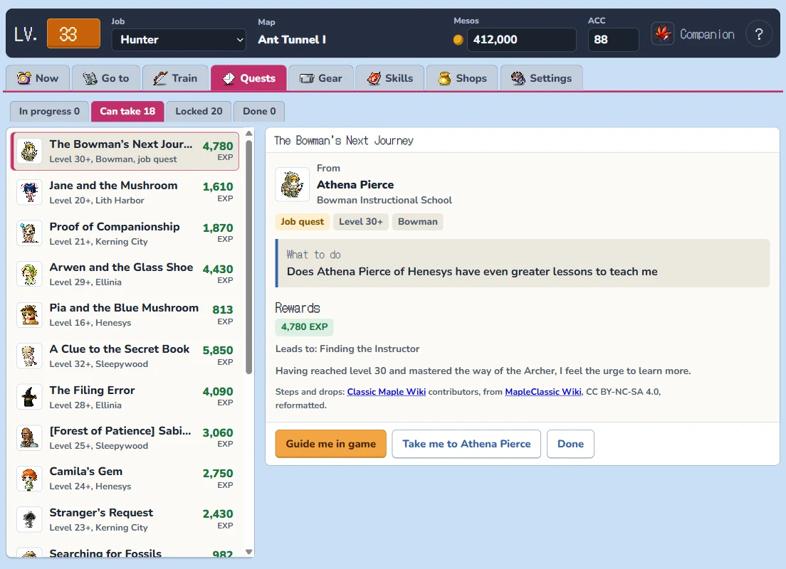

Companion ל-MapleStory Classic
עוזר חינמי שיושב ליד המשחק: איפה לעשות גריינד, אילו קווסטים לקחת, מה ללבוש, אילו סקילים להעלות, ואיך מגיעים לכל מפה.
כל הגרסאות. חינמי ובקוד פתוח (MIT). לא רשמי: לא קשור ל-Nexon ולא מאושר על ידה.

דשבורד אחד, במראה של המשחק
Companion נפתח בדפדפן ונראה כמו חלון מהמשחק: תמונות האייטמים, המפות האמיתיות, ה-Equipment Inventory של Classic. בחרו ג'וב ורמה למעלה, וכל לשונית מתאימה את עצמה אליכם. אלה המסכים האמיתיים, של Hunter ברמה 33.

איפה לעשות גריינד
המפות לרמה שלכם, הטובה ראשונה: הכי הרבה EXP על ה-HP שאתם מורידים, ומפה עם יותר מונסטרים שווה יותר.
- המונסטרים בכל מפה: רמה, HP, EXP וכמה מהם יש.
- כמה ACC צריך כדי לא לפספס אף פעם.
- ה-EXP לשעה שלכם בפועל במפות שכבר עשיתם בהן גריינד, כשקריאת המסך פועלת.
- Take me there: המסלול, בלחיצה אחת.

קווסטים שאפשר לקחת עכשיו
מה פתוח ברמה שלכם, מי נותן אותו, איפה הוא עומד, וכמה הוא משלם.
- Guide me in game: כל מונסטר לצוד ואיפה, כל אייטם לאסוף ומי מדרופ אותו.
- אייטמים שאפשר לקנות במקום לפארם, ופרסים עם השווי שלהם בשוק.
- למי מחזירים אותו, ואז הקווסט הבא בשרשרת.

מה ללבוש
ה-Equipment Inventory של Classic, עם האייטם הכי טוב לג'וב ולרמה שלכם בכל סלוט.
- עברו עם העכבר על אייטם וקבלו את הטולטיפ של המשחק, עם הדרישות באדום כשחסר לכם.
- מחיר סנייפ ומחיר רגיל לכל חלק.
- כמה עולה הסט כולו, ליד ה-mesos שלכם.

לאן הולכים ה-SP וה-AP
חלון סקילים עם לשונית לכל ג'וב שהיה לכם, ושלוש נקודות ה-SP הבאות שלכם.
- סדר ה-SP מגיע ממדריך הקלאס של כל ג'וב.
- מה כל סקיל עושה ברמה 1 וברמה המקסימלית.
- AP לסטט שהנשק הבא שלכם צריך, ואם אין כזה, לסטט הראשי.
הדרך לכל מפה
מסלולים על תמונת המפה האמיתית, עם הפורטלים של המשחק מסומנים, וזה שצריך לקחת בעיגול אדום.
- הדרך הכי מהירה, לא זו עם הכי מעט פורטלים: הוא סופר גם את ההליכה בכל מפה.
- לוקח את ה-Regular Cab בין העיירות כשזה יותר קצר.
- כשקריאת המסך פועלת, המסלול מתקדם לבד כשאתם עוברים מפה.
בזמן שאתם משחקים
עוד שני מתגים ב-Settings, שניהם כבויים עד שתדליקו אותם. איתם Companion קורא את חלון המשחק כמו שאתם קוראים אותו, ואומר מה הוא רואה.
שחקו בחלון או ב-borderless, ב-1920×1080 ומעלה.
- Now
- EXP לשעה, זמן עד הרמה הבאה, קילים, מוות, גרף EXP של הסשן, והמפות הכי טובות שלכם לפי מה שבאמת הרווחתם, ו-History של כל סשן עבר שאפשר לפתוח שוב. בפארטי הוא מחשב את החלק שלכם בכל קיל.
- החלונות שלכם
- רמה, ג'וב ומפה מה-HUD; ספירות הקווסטים מה-Quest Helper; סטטים, סקילים, mesos וקווסטים כשאתם פותחים את החלונות האלה. מסלולים ומדריכי קווסטים מתקדמים לבד.
- מחירים בחנויות
- כל שורה בחנות של שחקן נבדקת מול המחיר שהאייטם באמת נמכר בו ב-MSC וב-Cozy: snipe, fair, pricey או overpriced, רק כששניהם מסכימים.
- מצויר על המשחק
- מחירים מתחת לטולטיפים של אייטמים, תווית על כל שורה בחנות, וחץ מתחת למיני-מפה לכיוון הפורטל הבא. הקליקים עוברים דרך החלונות האלה; שום דבר לא נכנס למשחק.
בטוח כברירת מחדל
מהרגע הראשון Companion משתמש רק בנתוני משחק ציבוריים ובמחירי שוק. הוא לא נוגע במשחק, לא קורא את המסך, ואפילו לא מחפש את חלון המשחק.
- רק מסתכלבלי זיכרון המשחק, קבצים, הזרקה, hooks או קלט. התהליך של המשחק אף פעם לא נפתח.
- רק חלון המשחקנלכד דרך Windows Graphics Capture, אותו API ש-OBS משתמש בו, ורק כשקריאת המסך פועלת.
- בלי מקשי קיצורבלי האזנה למקלדת; הכל נשלט מהדשבורד.
- אף פעם לא מפריעהחלונות שעל המשחק שקופים לקליקים, לא לוקחים פוקוס, ונעלמים כשהמשחק לא בחזית.
- נשאר אצלכם במחשבהמידע שלכם לא יוצא ממנו, אלא אם מחברים Discord להתראות על מכירות בחנות.
התקנה
- הורידו את
CompanionSetup.exeופתחו אותו. אם הדפדפן אומר שהקובץ לא מורד בדרך כלל, בחרו Keep. - ההתקנה לא חתומה, אז Windows עלול להגיד "Windows protected your PC": לחצו More info ואז Run anyway. לא צריך סיסמת מנהל.
- לחצו הבא. Companion מותקן, נפתח, ופותח את הדשבורד ב-
localhost:8765. הגדרה קצרה בעברית שואלת על הג'וב והרמה. - השאירו את החלון הקטן של Companion פתוח בזמן המשחק. כדי להסיר אותו: הגדרות, אפליקציות, Companion, הסר התקנה.
מהקוד
Windows עם Python 3.10 ומעלה:
git clone https://github.com/Tura2/classic-companion
cd classic-companion
pip install -r requirements.txt
python companion.pyאו לחיצה כפולה על run.bat. הקובץ build.bat בונה את ה-exe.
עזרו לבנות אותו
כלל אחד מעל הכל: Companion רק מסתכל. שינוי שקורא את זיכרון המשחק, שולח קלט, מאזין למקלדת או משחק בשבילכם לא ייכנס, כמה שלא יהיה שימושי.
- דווחו על באג
- משהו נקרא לא נכון? פתחו issue עם התמונה והטקסט מתיקיית
debugשל Companion. חתכו קודם שמות של שחקנים אחרים. - הציעו פיצ'ר
- ספרו מה אתם מנסים לעשות במשחק ואיך Companion יכול לעזור. טופס הפיצ'רים שואל בדיוק את זה.
- שלחו קוד
- עשו Fork, פתחו branch, הוסיפו טסט ושלחו pull request. את ההתקנה ומפת הקוד תמצאו ב-CONTRIBUTING.md.
קרדיטים
- נתוני המשחקOSMS Data Explorer של ohmi69 (MIT): מפות, מונסטרים, אייטמים, קווסטים, NPCs ופורטלים.
- מחיריםmaplestory-classic.com ו-Cozy Market.
- קווסטים ודרופיםהתורמים של Classic Maple Wiki ו-MapleClassic Wiki, השני דרך הנתונים הציבוריים של Club FM (CC BY-NC-SA 4.0).
- ACC ומדריכי קלאסיםNiaDB.
- תמונת הפורטלmaplestory.io.
- כל מי שעזרהתורמים; הרשימה המלאה ב-CREDITS.md.